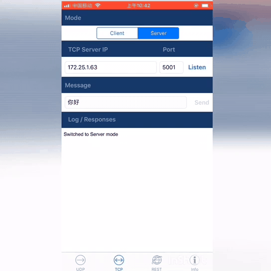
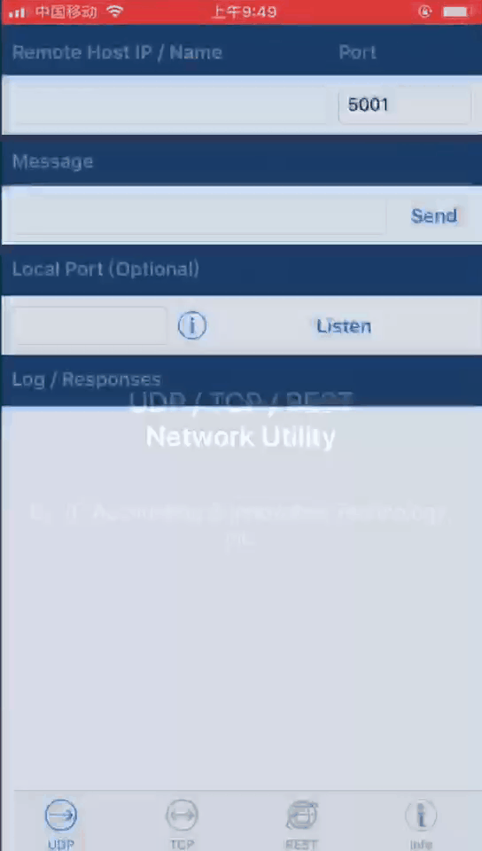

套接字-TCP
什么是socket?
Socket 是网络编程的一个抽象概念。通常我们用一个Socket表示“打开了一个网络链接”，而打开一个Socket需要知道目标计算机的IP地址和端口号，再指定协议类型即可。
TCP协议简介
TCP协议，传输控制协议（Transmission Control Protocol，缩写为 TCP）是一种面向连接的、可靠的、基于字节流的传输层通讯协议，由IETF的RFC 793定义。
TCP通信需要经过创建连接、数据传送、终止连接三个步骤。TCP通信模型中，在通信开始之前，一定要先创建相关连接，才能发送数据，类似于生活中，”打电话””。
套接字在工作时将连接的双方分为服务器端和客户端,即C/S模式,TCP通讯原理如下图:

Socket TCP通讯过程
TCP编程
本教程的这一部分将介绍如何作为客户端或服务端使用TCP套接字。有关更全面的socket模块的使用，请查阅 usocket 模块。
以下教程需要使用到TCP网络调试工具。下文使用的是IOS的 Network Test Utility ，可在APP Store搜索安装，android系统请点击下载。
声明：这里的TCP客户端（tcpClient）是你的电脑或者手机，而TCP服务端（tcpServer）是mpython掌控板。
TCP客户端
TCP编程的客户端一般步骤是：
创建一个socket，用函数socket()
设置socket属性，用函数setsockopt() , 可选
绑定IP地址、端口等信息到socket上，用函数bind() , 可选
设置要连接的对方的IP地址和端口等属性
连接服务器,用函数connect()
收发数据,用函数send()和recv(),或者read()和write()
关闭网络连接
1import socket
2from mpython import *
3
4host = "172.25.1.63" # TCP服务端的IP地址
5port = 5001 # TCP服务端的端口
6s=None
7
8mywifi=wifi() # 创建wifi类
9
10
11# 捕获异常，如果在"try" 代码块中意外中断，则停止关闭套接字
12try:
13 mywifi.connectWiFi("ssid","password") # WiFi连接，设置ssid 和password
14 # mywifi.enable_APWiFi("wifi_name",13) # 还可以开启AP模式,自建wifi网络
15 ip=mywifi.sta.ifconfig()[0] # 获取本机IP地址
16 s = socket.socket(socket.AF_INET, socket.SOCK_STREAM) # 创建TCP的套接字,也可以不给定参数。默认为TCP通讯方式
17 s.setsockopt(socket.SOL_SOCKET, socket.SO_REUSEADDR, 1) # 设置socket属性
18 s.connect((host,port)) # 设置要连接的服务器端的IP和端口,并连接
19 s.send("hello mPython,I am TCP Client") # 向服务器端发送数据
20
21 while True:
22 data = s.recv(1024) # 从服务器端套接字中读取1024字节数据
23 if(len(data) == 0): # 如果接收数据为0字节时,关闭套接字
24 print("close socket")
25 s.close()
26 break
27 print(data)
28 data=data.decode('utf-8') # 以utf-8编码解码字符串
29 oled.fill(0) # 清屏
30 oled.DispChar(data,0,0) # oled显示socket接收数据
31 oled.show() # 显示
32 s.send(data) # 向服务器端发送接收到的数据
33
34# 当捕获异常,关闭套接字、网络
35except:
36 if (s):
37 s.close()
38 mywifi.disconnectWiFi()
注意
由于在网络中都是以bytes形式传输的，所以需要注意数据编码与解码。
注意
上例,使用 connectWiFi() 连接同个路由器wifi。你也可以用 enable_APWiFi() 开启AP模式,自建wifi网络让其他设备接入进来。
首先掌控板和手机须连接至同个局域网内。打开Network Test Utility，进入“TCP Server”界面，
TCP Server IP选择手机在该网内的IP地址 ，端口号可设范围0~65535。然后，点击Listen，开始监听端口。
在程序中设置上文选择的TCP服务端IP地址 host 和端口号 port ，重启运行程序。
当连接Server成功后，TCP Server会接收到Client发送的文本 hello mPython,I am TCP Client 。此时您在TCP Server发送文本给Client，掌控板会
接收到文本并将文本显示至oled屏上。

TCP服务端
TCP编程的服务端一般步骤是：
创建一个socket，用函数socket()
设置socket属性，用函数setsockopt() , 可选
绑定IP地址、端口等信息到socket上，用函数bind()
开启监听和设置最大监听数,用函数listen()
等待客户端請求一个连接，用函数accept()
收发数据，用函数send()和recv()，或者read()和write()
关闭网络连接
tcpServer示例:
1import socket
2from mpython import *
3
4port=5001 # TCP服务端的端口,range0~65535
5listenSocket=None
6
7mywifi=wifi() # 创建wifi类
8
9# 捕获异常，如果在"try" 代码块中意外中断，则停止关闭套接字
10try:
11 mywifi.connectWiFi("ssid","password") # WiFi连接，设置ssid 和password
12 # mywifi.enable_APWiFi("wifi_name",13) # 还可以开启AP模式,自建wifi网络
13 ip= mywifi.sta.ifconfig()[0] # 获取本机IP地址
14 listenSocket = socket.socket(socket.AF_INET, socket.SOCK_STREAM) # 创建socket,不给定参数默认为TCP通讯方式
15 listenSocket.setsockopt(socket.SOL_SOCKET, socket.SO_REUSEADDR, 1) # 设置套接字属性参数
16 listenSocket.bind((ip,port)) # 绑定ip和端口
17 listenSocket.listen(3) # 开始监听并设置最大连接数
18 print ('tcp waiting...')
19 oled.DispChar("%s:%s" %(ip,port),0,0) # oled屏显示本机服务端ip和端口
20 oled.DispChar('accepting.....',0,16)
21 oled.show()
22
23 while True:
24 print("accepting.....")
25 conn,addr = listenSocket.accept() # 阻塞,等待客户端的请求连接,如果有新的客户端来连接服務器，那麼会返回一个新的套接字专门为这个客户端服务
26 print(addr,"connected")
27
28 while True:
29 data = conn.recv(1024) # 接收对方发送过来的数据,读取字节设为1024字节
30 if(len(data) == 0):
31 print("close socket")
32 conn.close() # 如果接收数据为0字节时,关闭套接字
33 break
34 data_utf=data.decode() # 接收到的字节流以utf8编码解码字符串
35 print(data_utf)
36 oled.DispChar(data_utf,0,48) # 将接收到文本oled显示出来
37 oled.show()
38 oled.fill_rect(0,48,128,16,0) # 局部清屏
39 conn.send(data) # 返回数据给客户端
40
41# 当捕获异常,关闭套接字、网络
42except:
43 if(listenSocket):
44 listenSocket.close()
45 mywifi.disconnectWiFi()
注意
上例,使用``connectWiFi()`` 连接同个路由器wifi。你也可以用 enable_APWiFi() 开启AP模式,自建wifi网络让其他设备接入进来。
首先掌控板和手机须连接至同个局域网内。掌控板重启运行程序，TCP Server端等待Client端连接请求。打开Network Test Utility，进入“TCP Client”界面，填写Remote host和port,即 socket.blind(ip,port)
的IP地址和端口。Connect连接成功后，发送文本，掌控板接收到文本显示至oled屏并将返回至TCP Client端。您可在手机接收界面看到文本从Client->Server，Server->Client的过程。
{kind=link}
